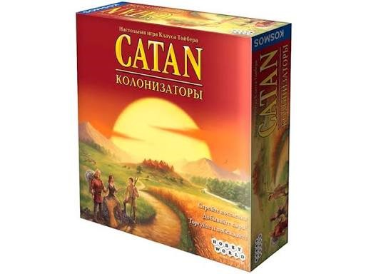

Описание
«Колонизаторы» — настольная стратегия, в которой участники осваивают остров, строят дороги и поселения, добывают ресурсы и торгуют друг с другом.
Изображение товара:

Характеристики
- Артикул: BG-001
- Количество игроков: 3–4
- Возраст: от 10 лет
- Время партии: 60–90 минут
- Цена: 3 490 рублей